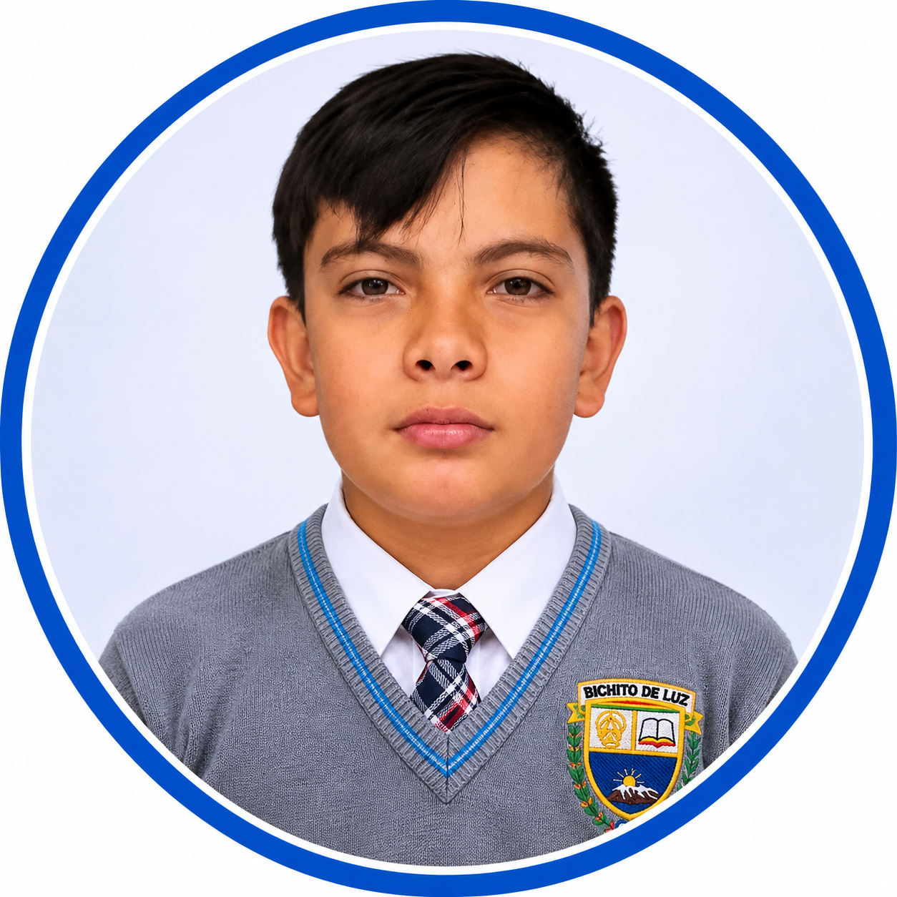
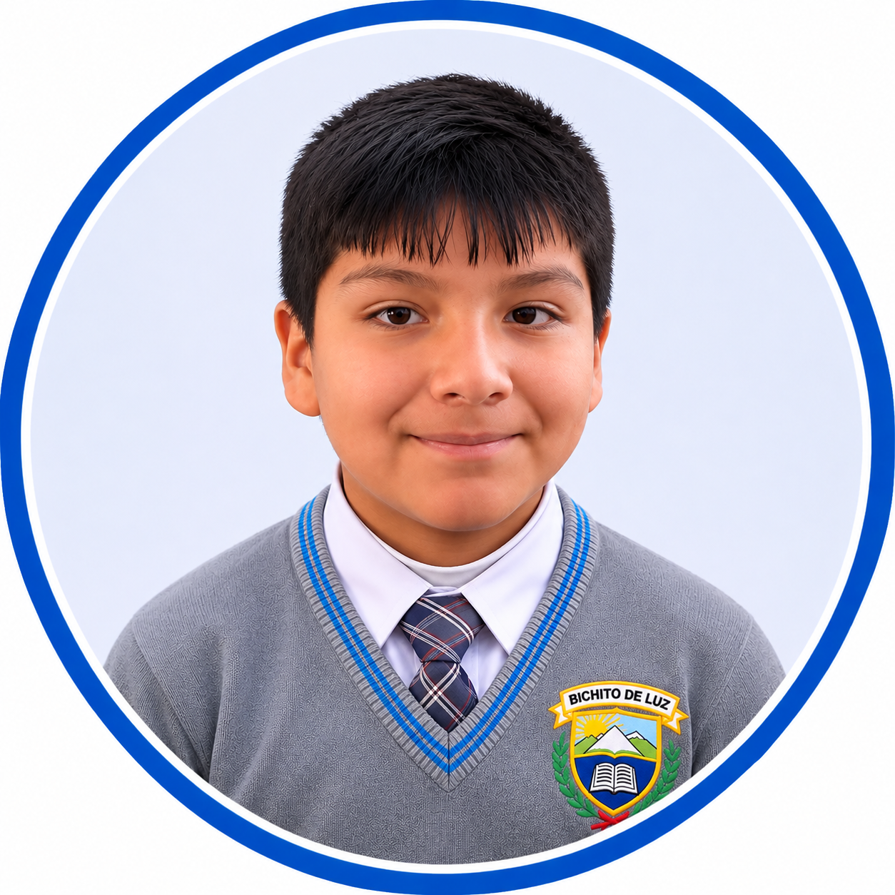

Nuestros protagonistas
👥 Estudiantes Participantes
Conoce a los estudiantes que forman parte de nuestra Feria Expogaláctica.
ZELIM ZAEL DIAZ AGUILAR
XAVI ALONSO ESPEJO VARGAS

Conoce a los estudiantes que forman parte de nuestra Feria Expogaláctica.

